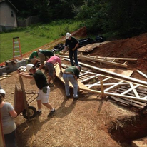
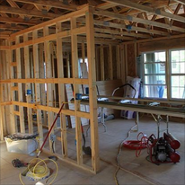
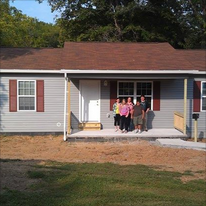

| Mission | Donate | ReStore | Volunteer | Contact Us |
Founded in 1992, Habitat for Humanity of Anderson County is an ecumenical ministry that builds simple, decent and affordable houses with participating families; working with diverse individuals, organizations, and faith communities to serve others.Habitat for Humanity's vision is a world where everyone has a decent place to live. Our mission is to put God's love into action by bringing people together to build homes, communities and hope. Habitat for Humanity of Anderson County is an ecumenical ministry that builds, repairs, and rehabilitates simple, decent and affordable houses with participating families; working with diverse individuals, businesses, organizations and faith communities to serve others. Habitat for Humanity International and its affiliated organizations (HFH) will not proselytize. Nor will HFH work with entities or individuals who insist on proselytizing as part of their work with HFH. This means that HFH will not offer assistance on the expressed or implied condition that people must (1) adhere to or convert to a particular faith or (2) listen and respond to messaging designed to induce conversion to a particular faith. |
   |